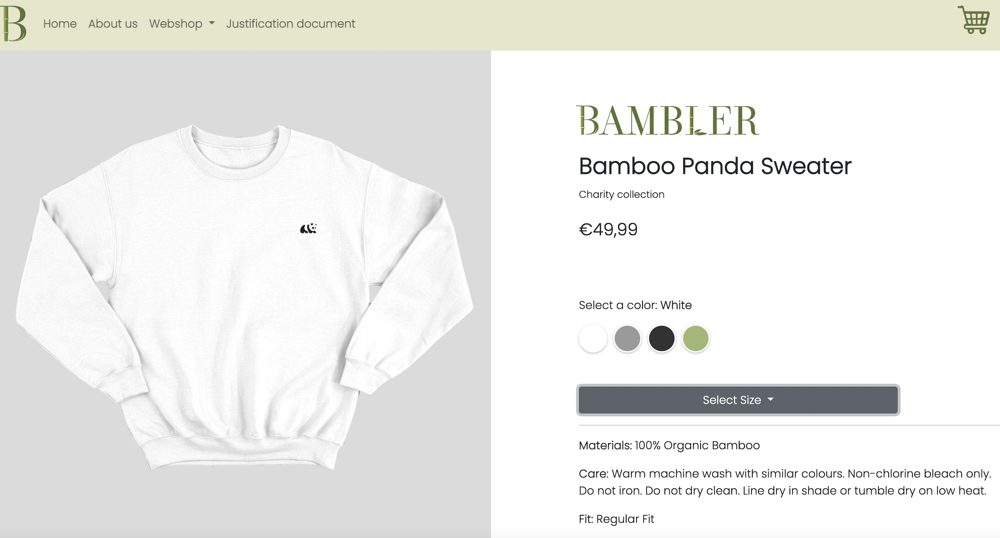

STROOM Portfolio Website
My task was to design a website for a the company STROOM to create a strong online presence showcase their portfolio and visually communicate their offerings to potential customers. I utilized my expertise in web design, UI/UX design, and branding to create a professional final website for the customer.
